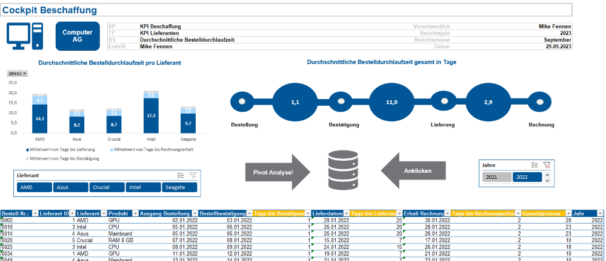

Bachelorarbeit: Einkaufscontrolling
- Tech Stack: Excel, VBA, PowerBI, KPI, Reporting, Controlling
- Website URL: Link
- Github URL: Project Link
Bei dieser Bachelorarbeit ging es darum, wie ein Dashboard mit Excel erstellt werden kann und dies im Rahmen des Beschaffungs- oder auch Einkaufscontrolling genutzt werden kann.
Hauptelemente waren:
- Aufbau einer Datenbasis
- Kalkulation von Kennzahlen
- Funktionen
- Diagramme
Im nachfolgenden Bild sieht man die Hauptseite des Dashboards. Es gliedert sich dabei in drei Bereiche:
Links: Lieferantenthemen
Mitte: Lagerhaltung
Rechts: Monetäre Sachverhalte
Mit Hilfe von VBA wurden überall Buttons erstellt, sodass durch Anklicken der Diagramme man zum dahinterliegenden Report gelangen kann.
Als nächstes erkennt man einen ROI-Treiberbaum, der sich gut mit Excel darstellen lassen kann. Die Daten dazu stammen aus verschiedenen Quellen.
In diesem Abschnitt ist eine Übersicht über die Durchschnittliche Bestelldurchlaufzeit zu sehen. Dabei kann auch zwischen Lieferanten über Datenschnitte gewählt werden. Mit VBA gelangt man per Mausklick in die Pivotanalyse. 
Im nachfolgenden Bild ist ein Report hinsichtlich des Lagerbestandes zu sehen. Durch Einsatz von bedingter Formatierung wird darauf hingewiesen, ob der Meldebestand erreicht wurde. Mit Hilfe von VBA lässt sich dann durch anklicken des E-Mail symbols automatisch mit eine E-Mail versenden, die darauf hinweist, dass Produkt x nachbestellt werden muss.
Im Rahmen dieser Bachelorarbeit wurde auch eine ABC-Analyse erstellt. Dabei wurden verschiedene Funktionen genutzt.